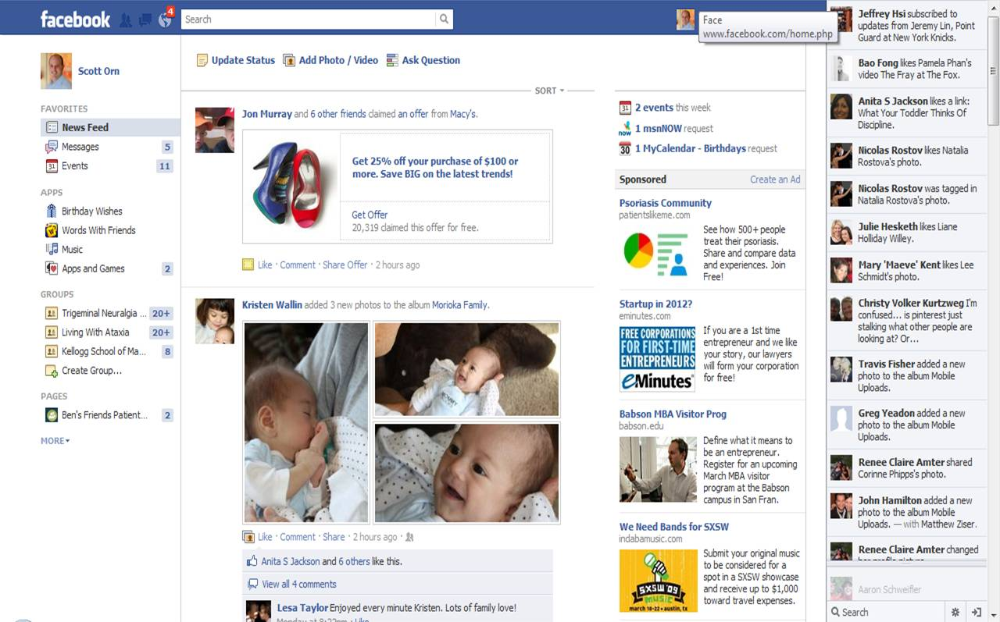

In addition to helping users focus on the task at hand, simplicity also gives apps a polished and delightful feel.
 One result of not following the principle of simplicity is feature creep. Feature creep happens when teams keep adding new features to satisfy a specific business or user need, often at the expense of the overall user experience. As more and more features are added over time, users may end up having a hard time finding what they need.
One result of not following the principle of simplicity is feature creep. Feature creep happens when teams keep adding new features to satisfy a specific business or user need, often at the expense of the overall user experience. As more and more features are added over time, users may end up having a hard time finding what they need.
One example of an app that has suffered from feature creep is Facebook. Over the years, Facebook added so many features that the app became quite cluttered and difficult to navigate. For example, the navigation bar includes options for the news feed, stories, groups, marketplace, pages, among other features. With so many options, users may have a hard time finding what they're looking for. Additionally, users are bombarded with notifications and tab badges, which can further distract them from the content they want to see.  By pursuing simplicity in feature creation, you're doing more than just streamlining the user experience. You're also reducing operational overhead by making features easier to QA, maintain, and port. This frees up valuable resources for Duolingo to further its mission of making education accessible to everyone.